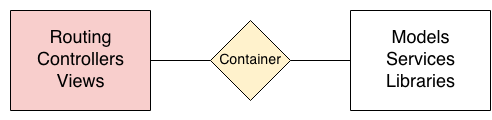

Interopérabilité cross-frameworks
Faire tourner Symfony avec n’importe quel autre framework dans la même application
sfPot Lyon, Janvier 2014
Bonjour
Matthieu Napoli
My C-Sense (myclabs), Lyon
Quelques projets
PHP-DI : Container d'injection de dépendances
Procedure : Symfony avec des contrôleurs procéduraux
MniPagesBundle : Symfony en mode "component-oriented"
…
Interopérabilité cross-frameworks ?
WTF
Migration en douceur d'une application à un framework récent
Une pensée pour ceux toujours coincés sur sf1, ZF1, …

Changement de framework
« on lui avait pourtant dit au CTO que son framework maison c'était pas une bonne idée »
Tirer parti du meilleur des "autres" frameworks
« j'aimerai bien faire un webservice REST avec Apigility mais mon front est sur Symfony »
Composer son application de modules multi-frameworks
« le dev front-end, il pige que dalle à Symfony, on va lui faire développer le front-office avec Silex/Laravel, il nous cassera pas notre back-office… »
Un peu de fun !
Tiens, j'ai bien envie de tester Phalcon moi
Mieux structurer son code
développement framework-agnostic
Vivre pour un idéal meilleur
Les bundles c'est cool, mais pourquoi limiter ça à Symfony ?

Comment ?
Qu'est-ce qu'un framework ?
2005

Interopérabilité cross-frameworks

Qu'est-ce qu'un framework ?
2013

Version simplifiée
Interopérabilité cross-frameworks

Step 1 : le router
Symfony

25 composants
1 bundle FrameworkBundle
interface HttpKernelInterface
{
/**
* @param Request $request
* @return Response
*/
public function handle(Request $request, ...);
}

crédits image : StackPHP

Stack

Stack is a convention for composing HttpKernelInterface middlewares.
Stack\UrlMap
class UrlMap implements HttpKernelInterface
{
public function __construct(HttpKernelInterface $app, $map = [])
// ...
}
Front Controller
$app = new FrontEndApplication();
$request = Request::createFromGlobals();
$response = $app->handle($request);
$response->send();
$app->terminate($request, $response);
$frontend = new FrontEndApplication();
$blog = new BlogApplication();
$map = [
'/blog' => $blog,
];
$app = new Stack\UrlMap($frontend, $map);
$request = Request::createFromGlobals();
$response = $app->handle($request);
$response->send();
$app->terminate($request, $response);
Les frameworks et
HttpKernelInterface ?
Symfony
AppKernel implements HttpKernelInterface
$app = new AppKernel();
Silex
Silex\Application implements HttpKernelInterface
$app = new Silex\Application();
$app->get('/', function() {
return 'Hello world!';
});
Zend Framework 1
class MyApplication implements HttpKernelInterface
{
public function handle(Request $request, ...)
{
$application = new Zend_Application(
'development',
__DIR__ . '/configs/application.ini'
);
$controller = Zend_Controller_Front::getInstance();
ob_start();
$application->bootstrap()->run();
$content = ob_get_clean();
return new Response($content);
}
}
Zend Framework 2
class MyApplication implements HttpKernelInterface
{
public function handle(Request $request, ...)
{
$config = require 'config/application.config.php';
$zfResponse = Zend\Mvc\Application::init($config)->run();
$sfResponse = ...($zfResponse);
return $sfResponse;
}
}
etc.
TODO: projet "HttpKernelInterface adapters"
Step 2 : le container
Réutiliser le container ?

Interoperabilité entre containers
Interoperabilité entre containers
github.com/container-interop/container-interop
interface ContainerInterface
{
public function get($id);
public function has($id);
}
Zend Framework, Laravel, Joomla, Aura, …
Prochaine étape : PHP-FIG
PHP-DI
Implémentera ContainerInterface, en attendant :
- Intégration Symfony 2
- Intégration ZF 2
- Intégration ZF 1
- …
Quid du container de Symfony ?
On le garde : toute la configuration Symfony n'est pas à refaire
et les bundles marchent toujours !
ParentAwareContainerInterface
-> Chainage de containers
Step 3 : on essaye ?
Layout
app/
frontend/
module.php // Silex -> retourne l'application Silex
blog/
module.php // Symfony -> retourne new AppKernel()
backoffice/
module.php // ZF1 -> retourne l'adapter qui implémente HttpKernelInterface
src/
Acme/Domain/
web/
index.php
Démo time
github.com/mnapoli/framework-interop

Aller plus loin ?
Bundles Symfony
"Modules" fournissant des pages/modèles/services
FosUserBundle
SonataAdminBundle
...
Modules framework-agnostic ?

Modules framework-agnostic ?